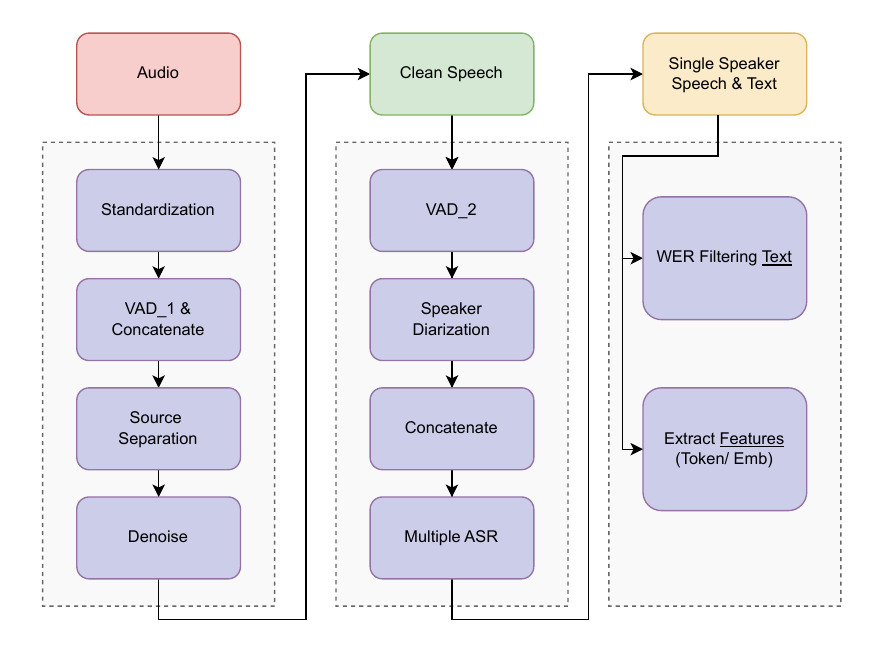
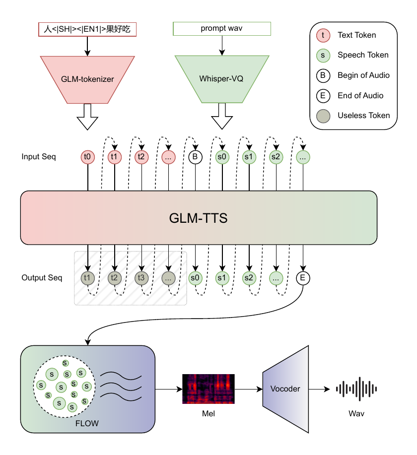
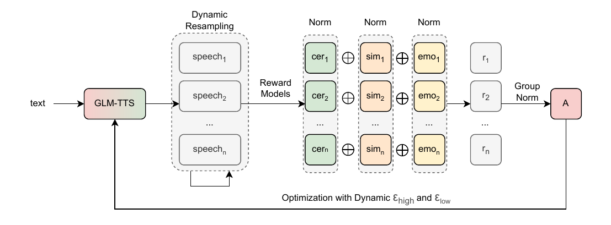

1
问题与动机
// CORE CHALLENGES
数据效率
高质量 voice cloning 需要大规模训练数据和长参考录音
情感表现
大多数模型依赖显式情感标签，表现力受限
发音精度
多音字、罕见字、方言发音精度不足（尤其中文）
RL 探索
RL 在 TTS 中 reward 设计难 + 训练不稳定
// KEY INSIGHT
仅用 100k 小时训练数据（vs CosyVoice3 的 1M 小时），通过两阶段架构和GRPO 多 reward RL在开源 benchmark 上达到 SOTA，LoRA 声音定制只需 15% 参数 + 1 小时单说话人音频。

两阶段生成架构：Text-to-Token AR → Token-to-Waveform Diffusion
2
核心方法
// SPEECH TOKENIZER (基于 Whisper-VQ)
Token 率优化
12.5Hz → 25Hz，vocab: 16k → 32k，减少高速发音 glitch，改善笑声/呼吸等副语言特征
Pitch Estimator Module
提升 pitch 建模精度，改善克隆 TTS 与参考音频的韵律对齐
Non-Causal Architecture
移除 block attention 和因果卷积，提升 ASR 和 PE 模块精度

Speech Tokenizer + Text Tokenizer + AR 生成 + Diffusion
// GRPO MULTI-REWARD RL
多维正则化奖励机制
分层处理：individual reward regularization → weighted fusion → overall regularization
动态采样
当 batch reward 同质化时自动重采样（最多 3 次），避免梯度消失
自适应梯度裁剪 (Clip-Higher)
ε_high 和 ε_low 随训练步动态调整——早期严格防止 reward hacking，后期放松鼓励探索
Phoneme-in 发音控制
标准字符 20% 概率替换为 phoneme；多音字/罕见字保留原文本但通过 G2P 提供 phoneme sequence。PER: 13.23% → 5.14%
Vocos2D Vocoder
2D 卷积处理频率子带；去掉 Multi-Period Discriminator；加 Discriminator Augmentation
3
实验结果
// SEED-TTS-EVAL BENCHMARK
| Model | CER↓ | SIM↑ | WER↓ | SIM_en↑ |
|---|---|---|---|---|
| MiniMax-Speech | 0.83 | 78.3 | 1.65 | 69.2 |
| Seed-TTS | 1.12 | 79.6 | 2.25 | 76.2 |
| CosyVoice3 | 1.16 | 78.0 | 2.02 | 71.8 |
| GLM-TTS | 1.03 | 76.1 | 2.23 | 67.2 |
| GLM-TTS_RL | 0.89 | 76.4 | 1.91 | 68.1 |
GLM-TTS_RL: CER=0.89% 接近最优，1.5B 开源模型 top-tier
// VICOS2D VS VICOS
| Metric | GT | Vocos | Vocos2D |
|---|---|---|---|
| NISQA↑ | 3.47 | 3.16 | 3.40 |
| UTMOS↑ | 2.11 | 1.87 | 1.91 |
| MOS↑ | 4.77 | 3.58 | 4.16 |

GRPO 多 Reward RL 训练曲线
// PHONEME-IN 消融
13.23%
Baseline PER
→
5.14%
Phoneme-in PER
LoRA 声音定制
最低 1 小时单说话人音频，只调 15% 参数（≈全量微调效果）。0.3%-5% 参数量效果有限，15% 是稳定 production 门槛。